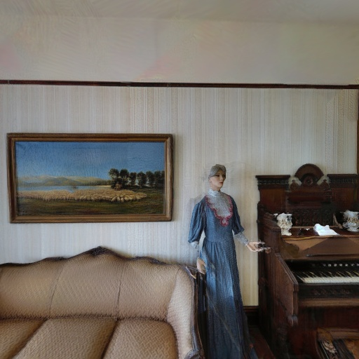
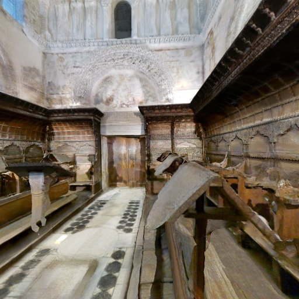
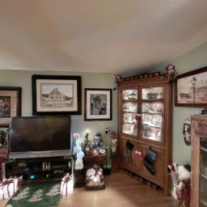
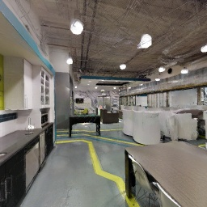

|  2t7WUuJeko7 |  pLe4wQe7qrG |  RPmz2sHmrrY |  YVUc4YcDtcY |
Please note that the reconstructed mesh has been compressed to enable a smooth in-browser experience. We decimated 50% of the mesh triangles. Thus, the visual quality is slightly degraded compared to the visual results. ⚠️ If the renderer does not work properly, please press Ctrl + Shift + R to force-refresh the page. You may also open the Developer Console (F12) and check the logs — sometimes the viewer loads after a short delay.